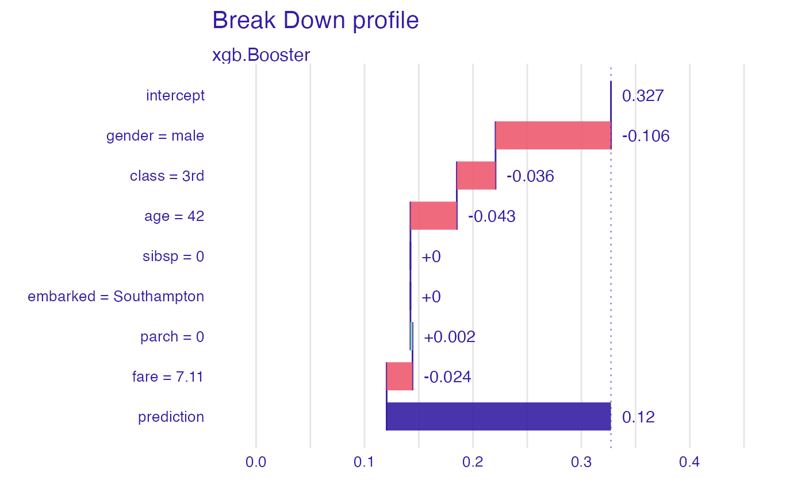
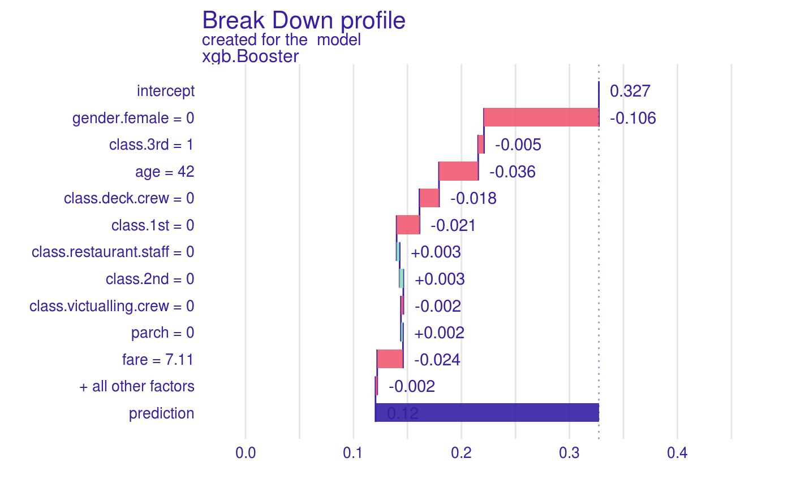

DALEX is designed to work with various black-box models like tree ensembles, linear models, neural networks etc. Unfortunately R packages that create such models are very inconsistent. Different tools use different interfaces to train, validate and use models. One of those tools, we would like to make more accessible is the xgboost package.
explain_xgboost(
model,
data = NULL,
y = NULL,
weights = NULL,
predict_function = NULL,
predict_function_target_column = NULL,
residual_function = NULL,
...,
label = NULL,
verbose = TRUE,
precalculate = TRUE,
colorize = TRUE,
model_info = NULL,
type = NULL,
encode_function = NULL,
true_labels = NULL
)object - a model to be explained
data.frame or matrix - data that was used for fitting. If not provided then will be extracted from the model. Data should be passed without target column (this shall be provided as the y argument). NOTE: If target variable is present in the data, some of the functionalities my not work properly.
numeric vector with outputs / scores. If provided then it shall have the same size as data. For classif task has to be numerci in range [0, nclasses)
numeric vector with sampling weights. By default it's NULL. If provided then it shall have the same length as data
function that takes two arguments: model and new data and returns numeric vector with predictions
Character or numeric containing either column name or column number in the model prediction object of the class that should be considered as positive (i.e. the class that is associated with probability 1). If NULL, the second column of the output will be taken for binary classification. For a multiclass classification setting that parameter cause switch to binary classification mode with 1 vs others probabilities.
function that takes three arguments: model, data and response vector y. It should return a numeric vector with model residuals for given data. If not provided, response residuals (\(y-\hat{y}\)) are calculated.
other parameters
character - the name of the model. By default it's extracted from the 'class' attribute of the model
if TRUE (default) then diagnostic messages will be printed
if TRUE (default) then 'predicted_values' and 'residuals' are calculated when explainer is created.
if TRUE (default) then WARNINGS, ERRORS and NOTES are colorized. Will work only in the R console.
a named list (package, version, type) containing information about model. If NULL, DALEX will seek for information on it's own.
type of a model, either classification or regression. If not specified then type will be extracted from model_info.
function(data, ...) that if executed with data parameters returns encoded dataframe that was used to fit model. Xgboost does not handle factors on it's own so such function is needed to acquire better explanations.
a vector of y before encoding.
explainer object (explain) ready to work with DALEX
library("xgboost")
#>
#> Attaching package: ‘xgboost’
#> The following object is masked from ‘package:dplyr’:
#>
#> slice
library("DALEXtra")
library("mlr")
# 8th column is target that has to be omitted in X data
data <- as.matrix(createDummyFeatures(titanic_imputed[,-8]))
model <- xgboost(data, titanic_imputed$survived, nrounds = 10,
params = list(objective = "binary:logistic"),
prediction = TRUE)
#> [12:22:01] WARNING: amalgamation/../src/learner.cc:576:
#> Parameters: { "prediction" } might not be used.
#>
#> This could be a false alarm, with some parameters getting used by language bindings but
#> then being mistakenly passed down to XGBoost core, or some parameter actually being used
#> but getting flagged wrongly here. Please open an issue if you find any such cases.
#>
#>
#> [12:22:01] WARNING: amalgamation/../src/learner.cc:1115: Starting in XGBoost 1.3.0, the default evaluation metric used with the objective 'binary:logistic' was changed from 'error' to 'logloss'. Explicitly set eval_metric if you'd like to restore the old behavior.
#> [1] train-logloss:0.574284
#> [2] train-logloss:0.509886
#> [3] train-logloss:0.472245
#> [4] train-logloss:0.447029
#> [5] train-logloss:0.428636
#> [6] train-logloss:0.415121
#> [7] train-logloss:0.405931
#> [8] train-logloss:0.399623
#> [9] train-logloss:0.394858
#> [10] train-logloss:0.391071
# explainer with encode functiom
explainer_1 <- explain_xgboost(model, data = titanic_imputed[,-8],
titanic_imputed$survived,
encode_function = function(data) {
as.matrix(createDummyFeatures(data))
})
#> Preparation of a new explainer is initiated
#> -> model label : xgb.Booster ( default )
#> -> data : 2207 rows 7 cols
#> -> target variable : 2207 values
#> -> predict function : yhat.xgb.Booster will be used ( default )
#> -> predicted values : No value for predict function target column. ( default )
#> -> model_info : package xgboost , ver. 1.5.2.1 , task classification ( default )
#> -> predicted values : numerical, min = 0.04738454 , mean = 0.3272404 , max = 0.9705966
#> -> residual function : difference between y and yhat ( default )
#> -> residuals : numerical, min = -0.8105438 , mean = -0.005083592 , max = 0.9452911
#> A new explainer has been created!
plot(predict_parts(explainer_1, titanic_imputed[1,-8]))

# explainer without encode function
explainer_2 <- explain_xgboost(model, data = data, titanic_imputed$survived)
#> Preparation of a new explainer is initiated
#> -> model label : xgb.Booster ( default )
#> -> data : 2207 rows 17 cols
#> -> target variable : 2207 values
#> -> predict function : yhat.xgb.Booster will be used ( default )
#> -> predicted values : No value for predict function target column. ( default )
#> -> model_info : package xgboost , ver. 1.5.2.1 , task classification ( default )
#> -> predicted values : numerical, min = 0.04738454 , mean = 0.3272404 , max = 0.9705966
#> -> residual function : difference between y and yhat ( default )
#> -> residuals : numerical, min = -0.8105438 , mean = -0.005083592 , max = 0.9452911
#> A new explainer has been created!
plot(predict_parts(explainer_2, data[1,,drop = FALSE]))
